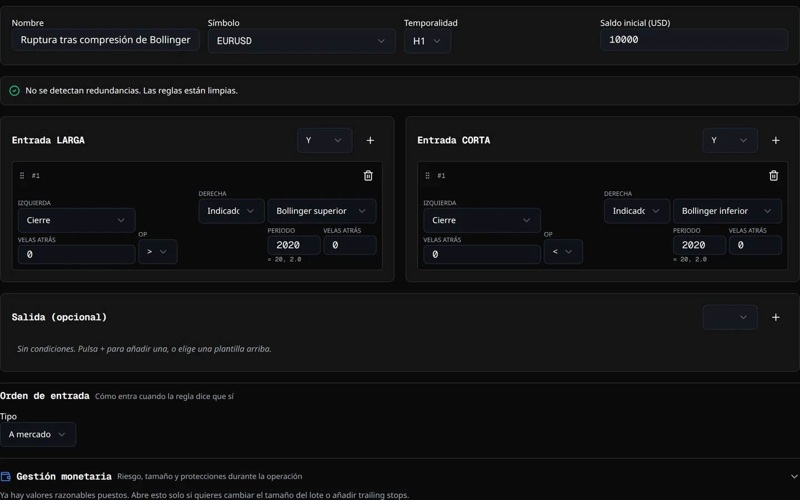
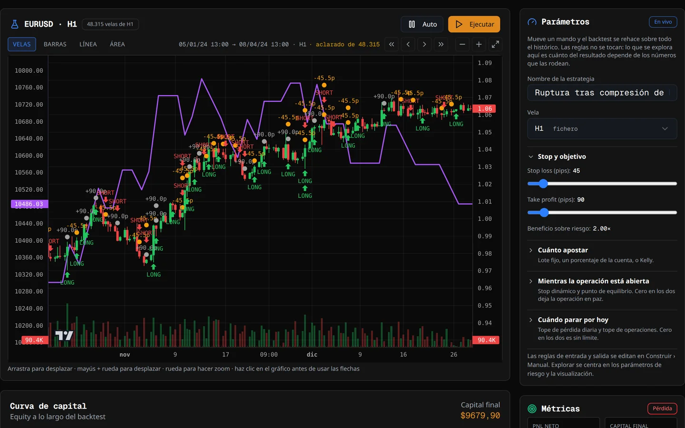
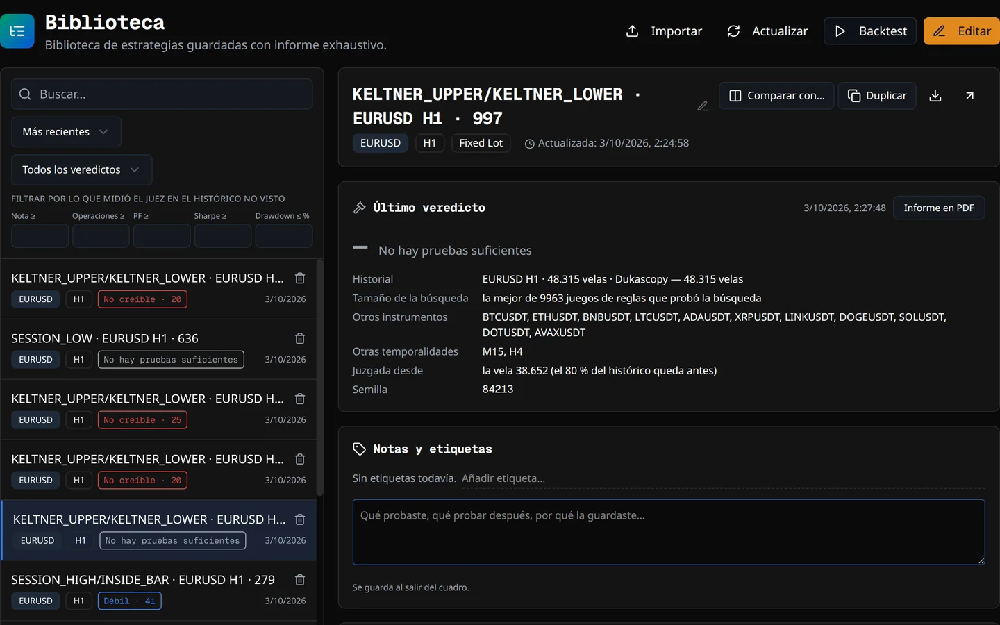
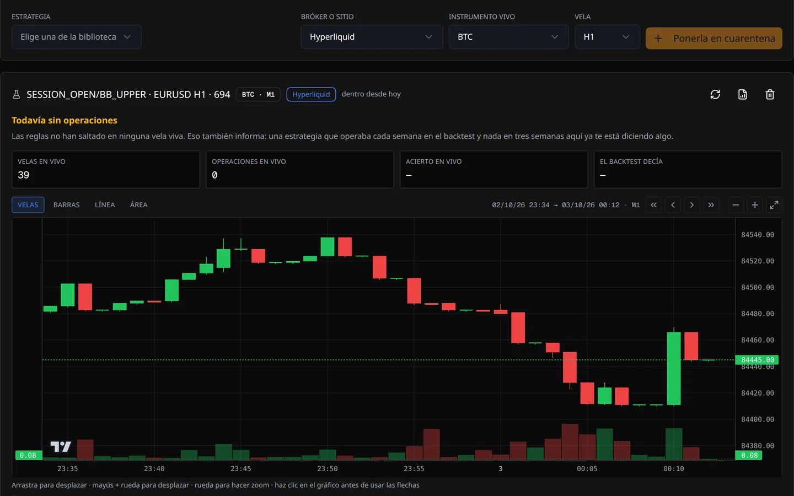
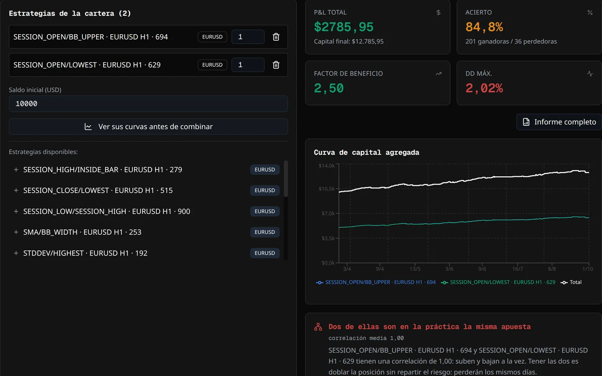
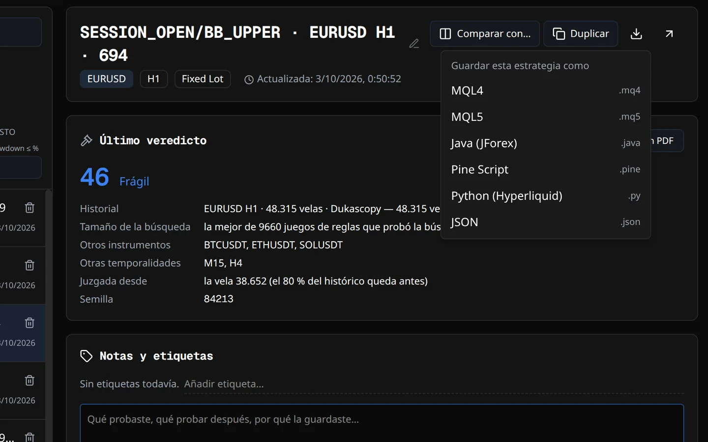
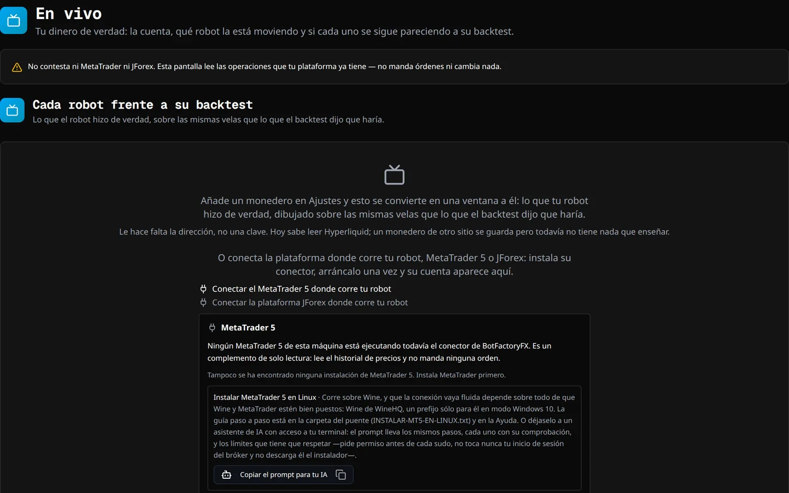
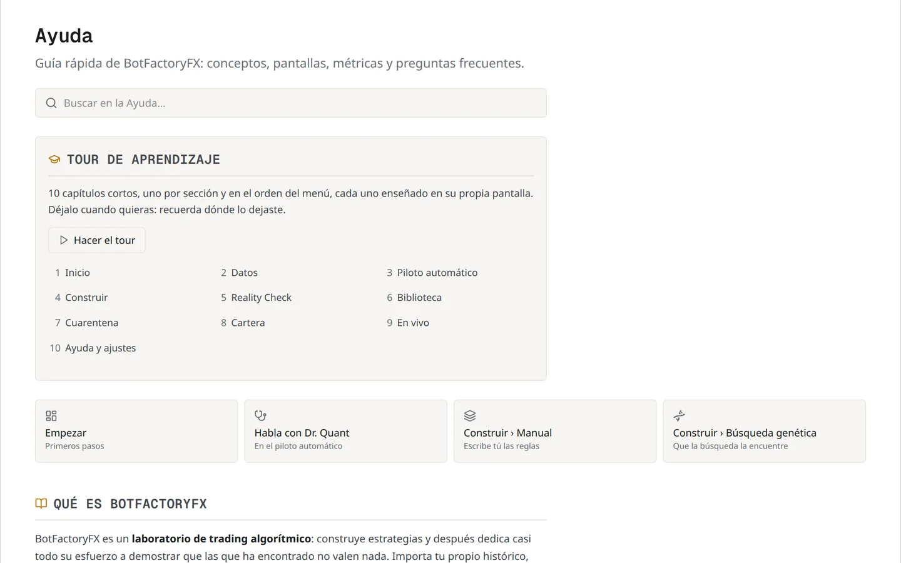

Cómo funciona
De un fichero de precios a un robot en el que confiar, o que tirar
Las pantallas de BotFactoryFX en el orden en que se trabaja, que es el orden del menú del programa. Cada una con lo que se hace en ella y el propio programa haciéndolo: grabado en pasadas de verdad, acelerado donde una búsqueda tarda minutos, nunca maquetado.
1 Datos
Trae el histórico sobre el que vas a probar
Todo empieza por las velas. Entran por seis puertas, y el programa revisa lo que llegó antes de que construyas nada encima.
- Elige la fuente: tu propio CSV —de tu bróker o la exportación de gráficos de TradingView—, Dukascopy (1.615 instrumentos, sin cuenta), Binance (más de 500 pares), MetaTrader 5, JForex o un monedero web3.
- Elige el instrumento, la vela y hasta dónde atrás. Las descargas van en segundo plano, varias a la vez, mientras haces otra cosa.
- Lee la auditoría. Huecos, duplicados, festivos… y el histórico que trae el futuro, en el que una hora del día ya lleva el máximo y el mínimo del día entero.
- Carga un segundo instrumento y el juez podrá probar tus reglas en otro sitio. La pantalla te avisa cuando puede.
Bueno saberloCada histórico nace con sus costes —diferencial, comisión y swap—, leídos de tu propio terminal cuando vienen de MetaTrader, y la pantalla dice de dónde sale cada cifra.
2 Piloto automático
Pídelo en una frase
Constrúyeme un sistema de ruptura para EURUSD en H1. Aguanto un drawdown del 15 %.
La frase la lee el código, no una IA, y pone en marcha la misma búsqueda, el mismo juez y la misma simulación de cartera que harías tú a mano.
- Di lo que quieres: el instrumento, la temporalidad, el estilo, cuánta caída aguantas.
- Revisa lo que eligió por ti. Antes de empezar enseña lo que entendió y, bajo No lo dijiste, así que he elegido, cada decisión que tomó por ti, con su porqué. Cambia cualquiera con otra frase.
- Pulsa Empezar y mira las seis fases: buscar, medir, elegir, juzgar, guardar y combinar.
- Lee el resultado. Todo lo que guardó va a la Biblioteca con su veredicto —también lo que suspendió, para que veas por qué—. Sólo lo que aprueba el juez se combina en una cartera.
3 Construir
O constrúyelo tú, de tres maneras
El piloto automático es un atajo por las mismas herramientas. En Construir las manejas tú, sobre el histórico abierto en Datos.


Manual escribe las reglas
Un editor de bloques de reglas Y/O: 56 indicadores y campos de precio donde elegir, y fórmulas que escribes tú. Empieza por una plantilla guiada o desde cero; un comprobador avisa de dos reglas que dicen lo mismo. Stop y objetivo en pips, en ATR o en porcentaje del precio, y el backtest a un clic.
Búsqueda genética deja que la encuentre
Una búsqueda genética en la que cada individuo es una estrategia completa, con todos los núcleos que tengas. Escribe siete familias —tendencia, ruptura, reversión, acción del precio, impulso, volatilidad y divergencia— y las mezcla cuando sale a cuenta. La Rueda busca, juzga y vuelve a empezar sola.
Explorar mira antes de decidir
Mueve un número —el stop, la vela, el riesgo— y el backtest se rehace sobre todo el histórico en cuanto lo sueltas. Aquí no se juzga ni se guarda nada: es para mirar una idea.
4 Reality Check
Después, ponla delante del juez
No pregunta «¿ganó dinero?» sino «¿es real el resultado?». Trece comprobaciones, nueve de ellas sobre el último tramo del histórico: el que la búsqueda nunca vio.
- Abre la estrategia y pasa el juez. Ya sabe cuántas variantes se probaron para encontrarla: la mejor de diez mil tiene que demostrar más que la primera.
- Míralo trabajar: fuera de muestra, mejor que el azar, walk-forward, sensibilidad de los parámetros, Monte Carlo, otros instrumentos, otras temporalidades, costes y más.
- Lee cada fila: qué se midió, la cifra que salió y por qué importa.
- Lee el veredicto en palabras llanas —sólida, frágil, débil, no creíble o no hay pruebas suficientes— con la cifra que lo limita.
Bueno saberloTambién pone a prueba el procedimiento que encontró la estrategia, repitiendo la búsqueda entera en cinco ventanas del histórico.
5 Biblioteca
Cada estrategia guarda su expediente
Lo que guardas va a la Biblioteca con su veredicto, el histórico en el que se midió y cuántas variantes se probaron para encontrarla.

- Encuéntrala: busca, ordena por fecha, nombre o símbolo, filtra por tus propias etiquetas.
- Abre el informe completo: la curva, las reglas en palabras, cada operación… y el factor de beneficio con su margen del 90 %, que sale ancho cuando hay pocas operaciones, como debe.
- Compara dos estrategias lado a lado, o duplica una para cambiarla sin tocar la original: la copia conserva su veredicto y su cuenta.
- Imprímela: el informe en papel lleva las reglas en palabras y el veredicto del juez.
6 Cuarentena
Velas en vivo antes que dinero en vivo
Un backtest mide el pasado. La Cuarentena hace correr la estrategia sobre las velas que tu bróker está publicando ahora y pone lo que va pasando frente al backtest que la aprobó.

- Elige la estrategia, el sitio y la vela: Hyperliquid, cualquier terminal de MetaTrader que tengas abierto, o JForex.
- O un robot que te vendieron. Entra frente al backtest con el que te lo vendieron: su código no se ejecuta, se lee lo que la cuenta donde opera hizo de verdad. Es lo que hace BFQuarantine.
- Vuelve cuando quieras. Cada visita trae las velas nuevas, las junta con las que ya tenía y vuelve a pasar la estrategia por todo lo acumulado. No caduca, y el programa no te pide ninguna cuenta.
- Lee la banda, no un porcentaje. Con seis operaciones, «62 % de aciertos» es una cifra correcta que miente; el veredicto es si el backtest sigue cayendo dentro de la banda del 95 % de lo que está pasando.
No sustituye a la cuenta demo: la mejora. La demo es del bróker, que te la cierra a las pocas semanas para que pases a real, y poner el robot a operar en ella pide un servidor o el ordenador viejo encendido día y noche. La Cuarentena usa las velas de tu cuenta real sin mandar una orden ni arriesgar un céntimo, y te dice qué habría pasado si esa estrategia hubiera estado operando. No tienes que dejar nada encendido: cuando la abres, se pone al día. El servidor lo pagas cuando ya sabes que se lo merece.
Bueno saberloNo manda órdenes a ningún sitio, así que no mide deslizamientos ni rechazos. Lo que mide es si la estrategia se sigue pareciendo a su propio backtest en el mercado de verdad. Con velas de minutos, ábrela cada pocos días: cada visita alcanza unos miles de velas hacia atrás, y si falta un trozo, lo dice.
7 Cartera
Estrategias que no pierden a la vez
Combina lo que aprobaron el juez y la Cuarentena. Cada estrategia se simula en su propio histórico, con su diferencial y su comisión, y las curvas se juntan por fecha.

- Mira primero las curvas: cada candidata sola, en un mismo gráfico, para ver si caen a la vez.
- Dale a cada una su peso y lee las cifras combinadas, con lo que aportó cada pata.
- Mira la correlación: cerca de +1 es la misma apuesta dos veces; cerca de cero, diversificación de verdad.
- Guárdala con un nombre y ponla al día cuando entren o salgan estrategias.
Bueno saberloLa cartera no termina al simularla. Cuando sus robots ya operan, En vivo junta en una sola pantalla tus cuentas de MetaTrader 5, JForex y monederos web3 —cada una por su lado, sin sumarlas— y pone cada robot frente a la estrategia de la que salió.
8 Exportar
Llévala a tu plataforma
Cada estrategia guardada está a un clic de código nativo para cinco plataformas: MQL4, MQL5, Java para JForex, Pine Script y Python para Hyperliquid. Lo que se escribe es la estrategia que midió el juez.

- Descárgala desde la Biblioteca, para la plataforma en la que operas.
- Instálala como espera cada plataforma: la Ayuda tiene un capítulo para cada una, paso a paso.
- Deja puesta la protección: el corte de cuenta, el horario y el cierre del viernes viajan dentro del robot.
Bueno saberloEl código se compila de verdad, con el compilador de cada plataforma, antes de publicar una versión: el robot que descargas es uno que compila.
Un robot de otro¿Tienes un robot en MQL4 y operas en JForex o en Python? Si sus reglas caben en el constructor, rehazlo a mano, compruébalo con el juez y expórtalo a cualquiera de las cinco plataformas.
9 En vivo
Todas tus cuentas, en una sola pantalla
En vivo junta tus cuentas en una sola pantalla —MetaTrader 5 y JForex a través de sus conectores, monederos web3 desde su dirección pública—, cada una por su lado, y dibuja sus operaciones reales en el gráfico.

- Conecta una vez: la pantalla se ofrece a instalar el conector de MetaTrader o de JForex, el mismo que trae el histórico.
- Mira cada robot junto a su estrategia. El número mágico que lleva lo ata a la Biblioteca, y el programa mide si sigue haciendo lo que prometía.
- Entérate de los problemas: un robot que se para, o uno que llega a su corte de cuenta.
Bueno saberloLeer una cuenta no necesita ninguna clave, así que no se pide: un secreto guardado que nunca se usa es riesgo sin beneficio.
Por el camino
El manual viene con él
Nunca te quedas solo delante de una pantalla que no entiendes.

- El tour te lleva por cada pantalla en el orden del trabajo, la primera vez y siempre que vuelvas a pedirlo.
- La Ayuda vive dentro del programa, con los mismos capítulos que la Documentación de esta web.
- Dr. Quant contesta preguntas en la conversación del piloto automático, con tu propia clave de IA o con un modelo que corre en tu máquina, y te dice lo que costó cada respuesta.
Te toca
Pruébalo entero en tu navegador
La versión del navegador es casi el programa entero —la búsqueda, el piloto automático, el Reality Check completo, la exportación—, sin registro y sin límite de tiempo. Sólo guardar tu trabajo y conectar tu bróker necesitan la aplicación de escritorio.